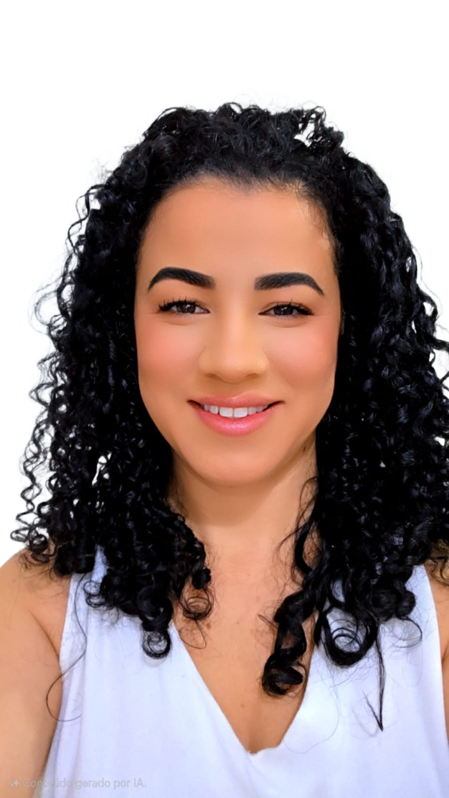

Bruna Thaís S. Ragogna
Estudante de Direito
Construindo uma trajetória com ética, estudo e compromisso.
Interesse em tecnologia, inovação e soluções digitais.

Estudante de Direito
Construindo uma trajetória com ética, estudo e compromisso.
Interesse em tecnologia, inovação e soluções digitais.